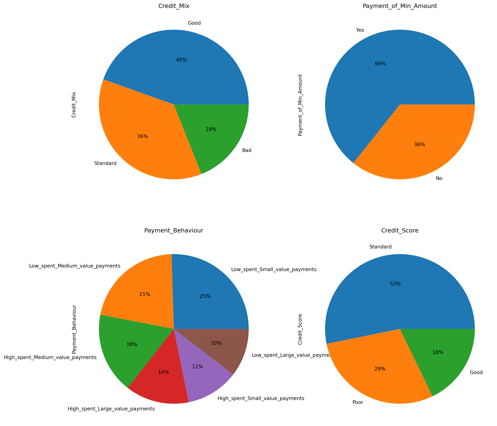
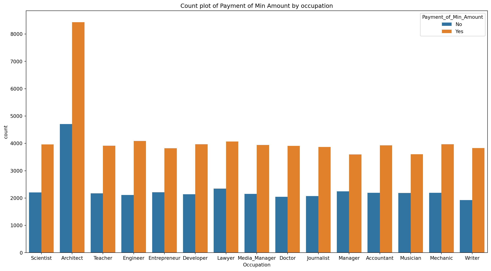
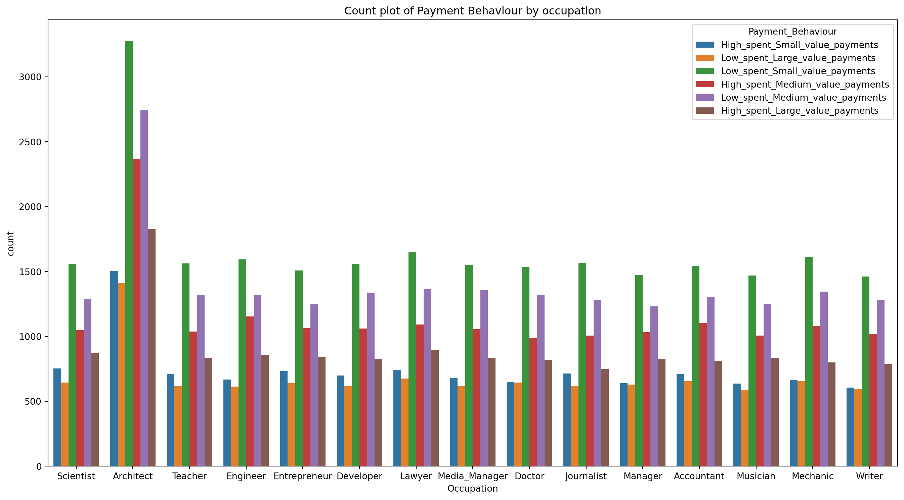

import warnings
import pandas as pd
import numpy as np
import seaborn as sns
import matplotlib.pyplot as plt
from sklearn import preprocessing
from sklearn import metrics
from sklearn .metrics import accuracy_score
from sklearn.model_selection import train_test_split
from statsmodels.stats.outliers_influence import variance_inflation_factor
pd.set_option('display.max_columns',None)
warnings.filterwarnings('ignore')
%matplotlib inline Credit Data Exploring and Cleaning by Python
Introduction
Data cleansing, also known as data cleaning or scrubbing, identifies and fixes errors, duplicates, and irrelevant data from a raw dataset. Part of the data preparation process, data cleansing allows for accurate, defensible data that generates reliable visualizations, models, and business decisions. Data cleaning is the process of detecting and correcting corrupt or inaccurate records from a record set, table, or database and refers to identifying incomplete, incorrect, inaccurate or irrelevant parts of the data and then replacing, modifying, or deleting the dirty or coarse data.
Theory
- Problem Statement
You are working as a data scientist in a global finance company. Over the years, the company has collected basic bank details and gathered a lot of credit-related information. The management wants to build an intelligent system to segregate the people into credit score brackets to reduce the manual efforts.
- Supervised Learning
Before we dive into Classification, let’s take a look at what Supervised Learning is. Suppose you are trying to learn a new concept in maths and after solving a problem, you may refer to the solutions to see if you were right or not. Once you are confident in your ability to solve a particular type of problem, you will stop referring to the answers and solve the questions put before you by yourself.
This is also how Supervised Learning works with machine learning models. In Supervised Learning, the model learns by example. Along with our input variable, we also give our model the corresponding correct labels. While training, the model gets to look at which label corresponds to our data and hence can find patterns between our data and those labels.
- Classification Problems
Classification is defined as the process of recognition, understanding, and grouping of objects and ideas into preset categories a.k.a “sub-populations.” With the help of these pre-categorized training datasets, classification in machine learning programs leverage a wide range of algorithms to classify future datasets into respective and relevant categories.
Classification algorithms used in machine learning utilize input training data for the purpose of predicting the likelihood or probability that the data that follows will fall into one of the predetermined categories. One of the most common applications of classification is for filtering emails into “spam” or “non-spam”, as used by today’s top email service providers.
- Classification Algorithms
Based on training data, the Classification algorithm is a Supervised Learning technique used to categorize new observations. In classification, a program uses the dataset or observations provided to learn how to categorize new observations into various classes or groups. For instance, 0 or 1, red or blue, yes or no, spam or not spam, etc. Targets, labels, or categories can all be used to describe classes. The Classification algorithm uses labeled input data because it is a supervised learning technique and comprises input and output information. A discrete output function (y) is transferred to an input variable in the classification process (x).
Methods
import packages
Import data into python and see the basic information of the dataset. We can see that the training set of the data has 100,000 observations and 28 features.
df = pd.read_csv('train.csv')
df.shape(100000, 28)Check the initial column names.
col_names = df.columns
col_namesIndex(['ID', 'Customer_ID', 'Month', 'Name', 'Age', 'SSN', 'Occupation',
'Annual_Income', 'Monthly_Inhand_Salary', 'Num_Bank_Accounts',
'Num_Credit_Card', 'Interest_Rate', 'Num_of_Loan', 'Type_of_Loan',
'Delay_from_due_date', 'Num_of_Delayed_Payment', 'Changed_Credit_Limit',
'Num_Credit_Inquiries', 'Credit_Mix', 'Outstanding_Debt',
'Credit_Utilization_Ratio', 'Credit_History_Age',
'Payment_of_Min_Amount', 'Total_EMI_per_month',
'Amount_invested_monthly', 'Payment_Behaviour', 'Monthly_Balance',
'Credit_Score'],
dtype='object')Drop some columns that will not be analyzed and see some basic inormation of the data frame.
df.drop(['ID' ,'Customer_ID' ,'Month' ,'Name', 'Type_of_Loan', 'Credit_History_Age', 'SSN'], axis=1, inplace=True)
df.info()<class 'pandas.core.frame.DataFrame'>
RangeIndex: 100000 entries, 0 to 99999
Data columns (total 21 columns):
# Column Non-Null Count Dtype
--- ------ -------------- -----
0 Age 100000 non-null object
1 Occupation 100000 non-null object
2 Annual_Income 100000 non-null object
3 Monthly_Inhand_Salary 84998 non-null float64
4 Num_Bank_Accounts 100000 non-null int64
5 Num_Credit_Card 100000 non-null int64
6 Interest_Rate 100000 non-null int64
7 Num_of_Loan 100000 non-null object
8 Delay_from_due_date 100000 non-null int64
9 Num_of_Delayed_Payment 92998 non-null object
10 Changed_Credit_Limit 100000 non-null object
11 Num_Credit_Inquiries 98035 non-null float64
12 Credit_Mix 100000 non-null object
13 Outstanding_Debt 100000 non-null object
14 Credit_Utilization_Ratio 100000 non-null float64
15 Payment_of_Min_Amount 100000 non-null object
16 Total_EMI_per_month 100000 non-null float64
17 Amount_invested_monthly 95521 non-null object
18 Payment_Behaviour 100000 non-null object
19 Monthly_Balance 98800 non-null object
20 Credit_Score 100000 non-null object
dtypes: float64(4), int64(4), object(13)
memory usage: 16.0+ MBThen check how many empty value each column has.
df.isnull().sum()Age 0
Occupation 0
Annual_Income 0
Monthly_Inhand_Salary 15002
Num_Bank_Accounts 0
Num_Credit_Card 0
Interest_Rate 0
Num_of_Loan 0
Delay_from_due_date 0
Num_of_Delayed_Payment 7002
Changed_Credit_Limit 0
Num_Credit_Inquiries 1965
Credit_Mix 0
Outstanding_Debt 0
Credit_Utilization_Ratio 0
Payment_of_Min_Amount 0
Total_EMI_per_month 0
Amount_invested_monthly 4479
Payment_Behaviour 0
Monthly_Balance 1200
Credit_Score 0
dtype: int64Check how many duplicated observations
df.duplicated().sum()0Dropping all observations with more than 3 missing values
size_before_cleaning = df.shape
df = df[df.isnull().sum(axis=1) < 3]
print("{} Records dropped".format(size_before_cleaning[0] - df.shape[0]))101 Records droppedClean all the features separately.
def filter_general(value):
if '-' in str(value):
return str(value).split('-')[1]
elif '_' in str(value):
return str(value).split('_')[0]
else:
return str(value)def filter_delayed_payments(value):
if "__" in str(value):
return str(value).split("__")[1]
elif '_' in str(value):
return str(value).replace("_", "")
elif str(value) == '_':
return str(value)
else:
return str(value)def Amount_invested_monthly(col):
if "__" in str(col):
return str(col).split("__")[1]
else:
return str(col)df["Amount_invested_monthly"]=df["Amount_invested_monthly"].apply(Amount_invested_monthly)
df["Amount_invested_monthly"]=df["Amount_invested_monthly"].astype("float")df["Changed_Credit_Limit"]=df["Changed_Credit_Limit"].apply(lambda x:x.split("-")[-1])
df.drop(df[df["Changed_Credit_Limit"]=="_"].index,inplace=True)
df["Changed_Credit_Limit"]=df["Changed_Credit_Limit"].astype("float")df.drop(df[df["Monthly_Balance"]=='__-333333333333333333333333333__'].index,inplace=True)
for i in ['Age', 'Annual_Income', 'Num_of_Loan', 'Outstanding_Debt', 'Monthly_Balance']:
df[i] = df[i].apply(filter_general)
df[i] = df[i].astype(np.float64)
print(i + " Successfully Cleaned")Age Successfully CleanedAnnual_Income Successfully Cleaned
Num_of_Loan Successfully Cleaned
Outstanding_Debt Successfully Cleaned
Monthly_Balance Successfully Cleaneddf['Num_of_Delayed_Payment'] = df['Num_of_Delayed_Payment'].apply(filter_delayed_payments)
df['Num_of_Delayed_Payment'] = df['Num_of_Delayed_Payment'].astype(np.float64)df['Occupation'] = df['Occupation'].replace('_______', np.nan)
df['Occupation'] = df['Occupation'].fillna(np.random.choice(pd.Series(['Scientist', 'Teacher', 'Engineer', 'Entrepreneur',
'Developer', 'Lawyer', 'Media_Manager', 'Doctor', 'Journalist',
'Manager', 'Accountant', 'Musician', 'Mechanic', 'Writer',
'Architect'])))df['Credit_Mix'] = df['Credit_Mix'].replace('_', np.nan)
df['Credit_Mix'] = df['Credit_Mix'].fillna(np.random.choice(pd.Series(['Standard', 'Good', 'Bad'])))df['Payment_of_Min_Amount'] = df['Payment_of_Min_Amount'].replace('NM', np.nan)
df['Payment_of_Min_Amount'] = df['Payment_of_Min_Amount'].fillna(np.random.choice(pd.Series(['Yes', 'No'])))df['Payment_Behaviour'] = df['Payment_Behaviour'].replace('!@9#%8', np.nan)
df['Payment_Behaviour'] = df['Payment_Behaviour'].fillna(np.random.choice(pd.Series(['High_spent_Small_value_payments',
'Low_spent_Large_value_payments', 'Low_spent_Small_value_payments',
'High_spent_Medium_value_payments',
'High_spent_Large_value_payments',
'Low_spent_Medium_value_payments'])))for i in ['Monthly_Inhand_Salary', 'Num_of_Delayed_Payment', 'Num_Credit_Inquiries', 'Amount_invested_monthly']:
df[i].fillna(df[i].median(), inplace=True)df['Monthly_Balance'].fillna(df['Monthly_Balance'].median(), inplace=True)** Data Visulizations**
df.describe(include='all').style.background_gradient(cmap='Blues').set_properties(**{'font-family':'Segoe UI'})| Age | Occupation | Annual_Income | Monthly_Inhand_Salary | Num_Bank_Accounts | Num_Credit_Card | Interest_Rate | Num_of_Loan | Delay_from_due_date | Num_of_Delayed_Payment | Changed_Credit_Limit | Num_Credit_Inquiries | Credit_Mix | Outstanding_Debt | Credit_Utilization_Ratio | Payment_of_Min_Amount | Total_EMI_per_month | Amount_invested_monthly | Payment_Behaviour | Monthly_Balance | Credit_Score | |
|---|---|---|---|---|---|---|---|---|---|---|---|---|---|---|---|---|---|---|---|---|---|
| count | 97799.000000 | 97799 | 97799.000000 | 97799.000000 | 97799.000000 | 97799.000000 | 97799.000000 | 97799.000000 | 97799.000000 | 97799.000000 | 97799.000000 | 97799.000000 | 97799 | 97799.000000 | 97799.000000 | 97799 | 97799.000000 | 97799.000000 | 97799 | 97799.000000 | 97799 |
| unique | nan | 15 | nan | nan | nan | nan | nan | nan | nan | nan | nan | nan | 3 | nan | nan | 2 | nan | nan | 6 | nan | 3 |
| top | nan | Scientist | nan | nan | nan | nan | nan | nan | nan | nan | nan | nan | Standard | nan | nan | Yes | nan | nan | Low_spent_Small_value_payments | nan | Standard |
| freq | nan | 13064 | nan | nan | nan | nan | nan | nan | nan | nan | nan | nan | 55452 | nan | nan | 62894 | nan | nan | 32359 | nan | 52020 |
| mean | 119.985153 | nan | 175441.663404 | 4027.005640 | 17.087404 | 22.518891 | 72.289103 | 10.747370 | 21.073150 | 29.809957 | 10.464173 | 27.318183 | nan | 1426.299152 | 32.282054 | nan | 1406.498229 | 615.602370 | nan | 401.639906 | nan |
| std | 687.568412 | nan | 1422851.517850 | 2961.624830 | 117.233274 | 129.222276 | 466.472121 | 61.596415 | 14.866001 | 218.435605 | 6.668569 | 191.044206 | nan | 1155.320700 | 5.114341 | nan | 8312.094625 | 2001.490408 | nan | 212.574825 | nan |
| min | 14.000000 | nan | 7005.930000 | 303.645417 | -1.000000 | 0.000000 | 1.000000 | 0.000000 | -5.000000 | -3.000000 | 0.000000 | 0.000000 | nan | 0.230000 | 20.000000 | nan | 0.000000 | 0.000000 | nan | 0.007760 | nan |
| 25% | 25.000000 | nan | 19436.305000 | 1789.873333 | 3.000000 | 4.000000 | 8.000000 | 2.000000 | 10.000000 | 9.000000 | 5.350000 | 3.000000 | nan | 566.080000 | 28.049940 | nan | 30.319985 | 76.913387 | nan | 270.916082 | nan |
| 50% | 34.000000 | nan | 37551.780000 | 3091.000000 | 6.000000 | 5.000000 | 13.000000 | 3.000000 | 18.000000 | 14.000000 | 9.400000 | 6.000000 | nan | 1166.230000 | 32.301174 | nan | 69.246684 | 135.770733 | nan | 336.652588 | nan |
| 75% | 42.000000 | nan | 72740.960000 | 5371.220000 | 7.000000 | 7.000000 | 20.000000 | 6.000000 | 28.000000 | 18.000000 | 14.860000 | 9.000000 | nan | 1945.675000 | 36.491492 | nan | 161.373123 | 254.946349 | nan | 467.500431 | nan |
| max | 8698.000000 | nan | 24198062.000000 | 15204.633333 | 1798.000000 | 1499.000000 | 5797.000000 | 1496.000000 | 67.000000 | 4397.000000 | 36.970000 | 2597.000000 | nan | 4998.070000 | 50.000000 | nan | 82331.000000 | 10000.000000 | nan | 1602.040519 | nan |
Create histograms to roughly see the distributions of some features.
df.hist(bins=200,figsize=[20,10])array([[<AxesSubplot:title={'center':'Age'}>,
<AxesSubplot:title={'center':'Annual_Income'}>,
<AxesSubplot:title={'center':'Monthly_Inhand_Salary'}>,
<AxesSubplot:title={'center':'Num_Bank_Accounts'}>],
[<AxesSubplot:title={'center':'Num_Credit_Card'}>,
<AxesSubplot:title={'center':'Interest_Rate'}>,
<AxesSubplot:title={'center':'Num_of_Loan'}>,
<AxesSubplot:title={'center':'Delay_from_due_date'}>],
[<AxesSubplot:title={'center':'Num_of_Delayed_Payment'}>,
<AxesSubplot:title={'center':'Changed_Credit_Limit'}>,
<AxesSubplot:title={'center':'Num_Credit_Inquiries'}>,
<AxesSubplot:title={'center':'Outstanding_Debt'}>],
[<AxesSubplot:title={'center':'Credit_Utilization_Ratio'}>,
<AxesSubplot:title={'center':'Total_EMI_per_month'}>,
<AxesSubplot:title={'center':'Amount_invested_monthly'}>,
<AxesSubplot:title={'center':'Monthly_Balance'}>]], dtype=object)Create pie charts to see the ratios of every nomial variables.
def pie_plot(df, cols_list, rows, cols):
fig, axes = plt.subplots(rows, cols)
for ax, col in zip(axes.ravel(), cols_list):
df[col].value_counts().plot(ax=ax, kind='pie', figsize=(15, 15), fontsize=10, autopct='%1.0f%%')
ax.set_title(str(col), fontsize = 12)
plt.show()pie_plot(df, ['Credit_Mix', 'Payment_of_Min_Amount', 'Payment_Behaviour', 'Credit_Score'], 2,2)
numeric_cols = df.select_dtypes(exclude = "object").columns
cat_cols = df.select_dtypes(include = "object").columns
print(numeric_cols)
print(cat_cols)Index(['Age', 'Annual_Income', 'Monthly_Inhand_Salary', 'Num_Bank_Accounts',
'Num_Credit_Card', 'Interest_Rate', 'Num_of_Loan',
'Delay_from_due_date', 'Num_of_Delayed_Payment', 'Changed_Credit_Limit',
'Num_Credit_Inquiries', 'Outstanding_Debt', 'Credit_Utilization_Ratio',
'Total_EMI_per_month', 'Amount_invested_monthly', 'Monthly_Balance'],
dtype='object')
Index(['Occupation', 'Credit_Mix', 'Payment_of_Min_Amount',
'Payment_Behaviour', 'Credit_Score'],
dtype='object')Plot the histogram of Credit Mix by occupation
fig = plt.figure(figsize= (17,9))
sns.countplot(data=df,x="Occupation",hue="Credit_Mix")<AxesSubplot:xlabel='Occupation', ylabel='count'>
Plot the histogram of Payment of Min Amount by occupation
fig = plt.figure(figsize= (17,9))
sns.countplot(data=df,x="Occupation",hue="Payment_of_Min_Amount").set(title="Count plot of Payment of Min Amount by occupation")[Text(0.5, 1.0, 'Count plot of Payment of Min Amount by occupation')]
Plot the histogram of Payment Behaviour by occupation
fig = plt.figure(figsize= (17,9))
sns.countplot(data=df,x="Occupation",hue="Payment_Behaviour").set(title='Count plot of Payment Behaviour by occupation')[Text(0.5, 1.0, 'Count plot of Payment Behaviour by occupation')]
Plot the histogram of Credit Score by occupation
fig = plt.figure(figsize= (17,9))
sns.countplot(data=df,x="Occupation",hue="Credit_Score").set(title='Count plot of Credit Score by occupation')[Text(0.5, 1.0, 'Count plot of Credit Score by occupation')]Checking multicollinearity with VIF
Multicollinearity occurs when there are two or more independent variables in a multiple regression model, which have a high correlation among themselves. When some features are highly correlated, we might have difficulty in distinguishing between their individual effects on the dependent variable. Multicollinearity can be detected using various techniques, one such technique being the Variance Inflation Factor(VIF).
In VIF method, we pick each feature and regress it against all of the other features. For each regression, the factor is calculated as :
Where, R-squared is the coefficient of determination in linear regression. Its value lies between 0 and 1.
As we see from the formula, greater the value of R-squared, greater is the VIF. Hence, greater VIF denotes greater correlation. This is in agreement with the fact that a higher R-squared value denotes a stronger collinearity. Generally, a VIF above 5 indicates a high multicollinearity.
vif_df = df[numeric_cols]
vif_data = pd.DataFrame()
vif_data["feature"] = vif_df.columns
vif_data["VIF"] = [variance_inflation_factor(vif_df.values ,i) for i in range(len(vif_df.columns))]
vif_data.head(17)| feature | VIF | |
|---|---|---|
| 0 | Age | 1.030047 |
| 1 | Annual_Income | 1.016152 |
| 2 | Monthly_Inhand_Salary | 4.751792 |
| 3 | Num_Bank_Accounts | 1.021315 |
| 4 | Num_Credit_Card | 1.029829 |
| 5 | Interest_Rate | 1.023865 |
| 6 | Num_of_Loan | 1.030466 |
| 7 | Delay_from_due_date | 4.436032 |
| 8 | Num_of_Delayed_Payment | 1.018732 |
| 9 | Changed_Credit_Limit | 4.290441 |
| 10 | Num_Credit_Inquiries | 1.020475 |
| 11 | Outstanding_Debt | 4.464962 |
| 12 | Credit_Utilization_Ratio | 10.666734 |
| 13 | Total_EMI_per_month | 1.028184 |
| 14 | Amount_invested_monthly | 1.099017 |
| 15 | Monthly_Balance | 8.219775 |
Plot the heatmap of all the numeric columns
vif_df = df[numeric_cols]
vif_data = pd.DataFrame()
vif_data["feature"] = vif_df.columns
vif_data["VIF"] = [variance_inflation_factor(vif_df.values ,i) for i in range(len(vif_df.columns))]
vif_data.head(17)| feature | VIF | |
|---|---|---|
| 0 | Age | 1.030047 |
| 1 | Annual_Income | 1.016152 |
| 2 | Monthly_Inhand_Salary | 4.751792 |
| 3 | Num_Bank_Accounts | 1.021315 |
| 4 | Num_Credit_Card | 1.029829 |
| 5 | Interest_Rate | 1.023865 |
| 6 | Num_of_Loan | 1.030466 |
| 7 | Delay_from_due_date | 4.436032 |
| 8 | Num_of_Delayed_Payment | 1.018732 |
| 9 | Changed_Credit_Limit | 4.290441 |
| 10 | Num_Credit_Inquiries | 1.020475 |
| 11 | Outstanding_Debt | 4.464962 |
| 12 | Credit_Utilization_Ratio | 10.666734 |
| 13 | Total_EMI_per_month | 1.028184 |
| 14 | Amount_invested_monthly | 1.099017 |
| 15 | Monthly_Balance | 8.219775 |
Dealing with outliers
An outlier is an observation that lies an abnormal distance from other values in a random sample from a population. In a sense, this definition leaves it up to the analyst (or a consensus process) to decide what will be considered abnormal. Before abnormal observations can be singled out, it is necessary to characterize normal observations. Two activities are essential for characterizing a set of data:
Examination of the overall shape of the graphed data for important features, including symmetry and departures from assumptions. Examination of the data for unusual observations that are far removed from the mass of data. These points are often referred to as outliers. Two graphical techniques for identifying outliers, scatter plots and box plots, along with an analytic procedure for detecting outliers when the distribution is normal (Grubbs’ Test)
def box_plot(df, num_cols):
plt.figure(figsize=(20, 15))
for i in range(len(num_cols)):
if i == 16:
break
else:
plt.subplot(4,4, i+1)
l = num_cols[i]
sns.boxplot(df[l], palette="flare")box_plot(df, numeric_cols)IQR (Inter Quartile Range)
IQR (Inter Quartile Range) Inter Quartile Range approach to finding the outliers is the most commonly used and most trusted approach used in the research field.
IQR = Quartile3 – Quartile1
To define the outlier base value is defined above and below datasets normal range namely Upper and Lower bounds, define the upper and the lower bound (1.5*IQR value is considered) :
upper = Q3 +1.5*IQR
lower = Q1 – 1.5*IQR
In the above formula as according to statistics, the 0.5 scale-up of IQR (new_IQR = IQR + 0.5*IQR) is taken, to consider all the data between 2.7 standard deviations in the Gaussian Distribution.
df_n = df.copy()
for i in numeric_cols:
''' Detection '''
# IQR
Q1 = np.percentile(df_n[i], 0.05,interpolation = 'midpoint')
Q3 = np.percentile(df_n[i], 99.95,interpolation = 'midpoint')
print("@ Feature " + i + "...")
print("Old Shape: ", df_n.shape)
df_n[numeric_cols] = df_n[numeric_cols][(df_n[i] < Q3) & (df_n[i] > Q1)]
df_n.dropna(inplace=True)
print("New Shape: ", df_n.shape)@ Feature Age...
Old Shape: (97799, 21)
New Shape: (96598, 21)
@ Feature Annual_Income...
Old Shape: (96598, 21)
New Shape: (96500, 21)
@ Feature Monthly_Inhand_Salary...
Old Shape: (96500, 21)New Shape: (96402, 21)
@ Feature Num_Bank_Accounts...
Old Shape: (96402, 21)
New Shape: (92102, 21)
@ Feature Num_Credit_Card...
Old Shape: (92102, 21)
New Shape: (90260, 21)
@ Feature Interest_Rate...
Old Shape: (90260, 21)New Shape: (88056, 21)
@ Feature Num_of_Loan...
Old Shape: (88056, 21)
New Shape: (79171, 21)
@ Feature Delay_from_due_date...
Old Shape: (79171, 21)
New Shape: (79076, 21)
@ Feature Num_of_Delayed_Payment...
Old Shape: (79076, 21)
New Shape: (78994, 21)
@ Feature Changed_Credit_Limit...
Old Shape: (78994, 21)New Shape: (78909, 21)
@ Feature Num_Credit_Inquiries...
Old Shape: (78909, 21)
New Shape: (74152, 21)
@ Feature Outstanding_Debt...
Old Shape: (74152, 21)
New Shape: (74068, 21)
@ Feature Credit_Utilization_Ratio...
Old Shape: (74068, 21)
New Shape: (73992, 21)
@ Feature Total_EMI_per_month...
Old Shape: (73992, 21)New Shape: (73637, 21)
@ Feature Amount_invested_monthly...
Old Shape: (73637, 21)
New Shape: (70293, 21)
@ Feature Monthly_Balance...
Old Shape: (70293, 21)
New Shape: (70221, 21)df_n.drop(df_n[df_n["Age"] >= 80].index, inplace=True)
df_n.drop(df_n[df_n["Annual_Income"] >= 500000].index, inplace=True)
df_n.drop(df_n[df_n["Num_Bank_Accounts"] >= 20].index, inplace=True)
df_n.drop(df_n[df_n["Num_Credit_Card"] >= 50].index, inplace=True)
df_n.drop(df_n[df_n["Num_of_Loan"] >= 20].index, inplace=True)
df_n.drop(df_n[df_n["Interest_Rate"] >= 35].index, inplace=True)
df_n.drop(df_n[df_n["Num_of_Delayed_Payment"] >= 30].index, inplace=True)
df_n.drop(df_n[df_n["Num_Credit_Inquiries"] >= 100].index, inplace=True)
df_n.drop(df_n[df_n["Total_EMI_per_month"] >= 2000].index, inplace=True)
df_n.drop(df_n[df_n["Amount_invested_monthly"] >= 1000].index, inplace=True)box_plot(df_n, numeric_cols)Handling numirical data
StandardScaler follows Standard Normal Distribution (SND). Therefore, it makes mean = 0 and scales the data to unit variance.
MinMaxScaler scales all the data features in the range [0, 1] or else in the range [-1, 1] if there are negative values in the dataset. This scaling compresses all the inliers in the narrow range [0, 0.005]. In the presence of outliers, StandardScaler does not guarantee balanced feature scales, due to the influence of the outliers while computing the empirical mean and standard deviation. This leads to the shrinkage in the range of the feature values. By using RobustScaler(), we can remove the outliers and then use either StandardScaler or MinMaxScaler for preprocessing the dataset.
df_num_clean = df_n[numeric_cols].copy()cols = numeric_cols
scaler = preprocessing.RobustScaler()
robust_df_ = scaler.fit_transform(df_num_clean)
robust_df_ = pd.DataFrame(robust_df_, columns =cols)
scaler = preprocessing.StandardScaler()
standard_df = scaler.fit_transform(df_num_clean)
standard_df = pd.DataFrame(standard_df, columns =cols)
scaler = preprocessing.MinMaxScaler()
minmax_df = scaler.fit_transform(df_num_clean)
minmax_df = pd.DataFrame(minmax_df, columns =cols)
fig, (ax1, ax2, ax3, ax4) = plt.subplots(ncols = 4, figsize =(20, 5))
ax1.set_title('Before Scaling')
sns.kdeplot(df_num_clean['Age'], ax = ax1, color ='b')
ax2.set_title('After Robust Scaling')
sns.kdeplot(robust_df_['Age'], ax = ax2, color ='g')
ax3.set_title('After Standard Scaling')
sns.kdeplot(standard_df['Age'], ax = ax3, color ='b')
ax4.set_title('After Min-Max Scaling')
sns.kdeplot(minmax_df['Age'], ax = ax4, color ='g')
plt.show()def RobustScaling(df_num, cols):
scaler = preprocessing.RobustScaler()
robust_df_temp = scaler.fit_transform(df_num)
robust_df_temp = pd.DataFrame(robust_df_temp, columns =cols)
return robust_df_temprobust_scaled = RobustScaling(df_num_clean, numeric_cols)
robust_scaled.head()| Age | Annual_Income | Monthly_Inhand_Salary | Num_Bank_Accounts | Num_Credit_Card | Interest_Rate | Num_of_Loan | Delay_from_due_date | Num_of_Delayed_Payment | Changed_Credit_Limit | Num_Credit_Inquiries | Outstanding_Debt | Credit_Utilization_Ratio | Total_EMI_per_month | Amount_invested_monthly | Monthly_Balance | |
|---|---|---|---|---|---|---|---|---|---|---|---|---|---|---|---|---|
| 0 | -0.529412 | -0.336516 | -0.383675 | -0.75 | -0.666667 | -0.928571 | 0.0 | -1.000000 | -1.000 | 0.096135 | -0.6 | -0.312965 | -0.625118 | -0.223513 | -0.338718 | -0.047445 |
| 1 | -0.529412 | -0.336516 | 0.000000 | -0.75 | -0.666667 | -0.928571 | 0.0 | -1.222222 | -0.125 | 0.096135 | -0.6 | -0.312965 | -0.017187 | -0.223513 | -0.063568 | -0.217173 |
| 2 | -0.529412 | -0.336516 | 0.000000 | -0.75 | -0.666667 | -0.928571 | 0.0 | -0.888889 | -1.375 | -0.399405 | -0.6 | -0.312965 | -0.084491 | -0.223513 | 0.526322 | -0.589813 |
| 3 | -0.529412 | -0.336516 | -0.383675 | -0.75 | -0.666667 | -0.928571 | 0.0 | -0.833333 | -0.125 | 0.096135 | -0.6 | -0.312965 | -0.865483 | -0.223513 | -0.622082 | 0.129167 |
| 4 | -0.529412 | -0.336516 | 0.000000 | -0.75 | -0.666667 | -0.928571 | 0.0 | -0.722222 | -1.375 | -0.102081 | -0.6 | -0.312965 | -0.572941 | -0.223513 | -0.469410 | 0.123015 |
sns.set(rc = {'figure.figsize':(15,8)})
for i in numeric_cols:
sns.kdeplot(robust_scaled[i], legend=True).set(title='KDE plot of robust scling')clean_df = df.copy()
clean_df.drop(labels=numeric_cols, axis="columns", inplace=True)
clean_df[numeric_cols] = robust_scaled[numeric_cols]Categorical data encoding
Label Encoding is a popular encoding technique for handling categorical variables. In this technique, each label is assigned a unique integer based on alphabetical ordering.
Label Encoding challenges there is a very high probability that the model captures the relationship between values like they were ordinal which isn’t suitble for example for ocean proximity here.
One-Hot Encoding One-Hot Encoding is another popular technique for treating categorical variables. It simply creates additional features based on the number of unique values in the categorical feature. Every unique value in the category will be added as a feature.
clean_df['Credit_Score'].replace({"Poor":0, "Standard":1, "Good":2}, inplace=True)
clean_df['Credit_Mix'].replace({"Bad":0, "Standard":1, "Good":2}, inplace=True)
clean_df['Payment_of_Min_Amount'].replace({"Yes":1, "No":0}, inplace=True)
clean_df = pd.get_dummies(clean_df, columns = ['Occupation', 'Payment_Behaviour'])for i in numeric_cols:
clean_df[i].fillna(method='ffill', inplace=True)clean_df.head()| Credit_Mix | Payment_of_Min_Amount | Credit_Score | Age | Annual_Income | Monthly_Inhand_Salary | Num_Bank_Accounts | Num_Credit_Card | Interest_Rate | Num_of_Loan | Delay_from_due_date | Num_of_Delayed_Payment | Changed_Credit_Limit | Num_Credit_Inquiries | Outstanding_Debt | Credit_Utilization_Ratio | Total_EMI_per_month | Amount_invested_monthly | Monthly_Balance | Occupation_Accountant | Occupation_Architect | Occupation_Developer | Occupation_Doctor | Occupation_Engineer | Occupation_Entrepreneur | Occupation_Journalist | Occupation_Lawyer | Occupation_Manager | Occupation_Mechanic | Occupation_Media_Manager | Occupation_Musician | Occupation_Scientist | Occupation_Teacher | Occupation_Writer | Payment_Behaviour_High_spent_Large_value_payments | Payment_Behaviour_High_spent_Medium_value_payments | Payment_Behaviour_High_spent_Small_value_payments | Payment_Behaviour_Low_spent_Large_value_payments | Payment_Behaviour_Low_spent_Medium_value_payments | Payment_Behaviour_Low_spent_Small_value_payments | |
|---|---|---|---|---|---|---|---|---|---|---|---|---|---|---|---|---|---|---|---|---|---|---|---|---|---|---|---|---|---|---|---|---|---|---|---|---|---|---|---|---|
| 0 | 1 | 0 | 2 | -0.529412 | -0.336516 | -0.383675 | -0.75 | -0.666667 | -0.928571 | 0.0 | -1.000000 | -1.000 | 0.096135 | -0.6 | -0.312965 | -0.625118 | -0.223513 | -0.338718 | -0.047445 | 0 | 0 | 0 | 0 | 0 | 0 | 0 | 0 | 0 | 0 | 0 | 0 | 1 | 0 | 0 | 0 | 0 | 1 | 0 | 0 | 0 |
| 1 | 2 | 0 | 2 | -0.529412 | -0.336516 | 0.000000 | -0.75 | -0.666667 | -0.928571 | 0.0 | -1.222222 | -0.125 | 0.096135 | -0.6 | -0.312965 | -0.017187 | -0.223513 | -0.063568 | -0.217173 | 0 | 0 | 0 | 0 | 0 | 0 | 0 | 0 | 0 | 0 | 0 | 0 | 1 | 0 | 0 | 0 | 0 | 0 | 1 | 0 | 0 |
| 3 | 2 | 0 | 2 | -0.529412 | -0.336516 | -0.383675 | -0.75 | -0.666667 | -0.928571 | 0.0 | -0.833333 | -0.125 | 0.096135 | -0.6 | -0.312965 | -0.865483 | -0.223513 | -0.622082 | 0.129167 | 0 | 0 | 0 | 0 | 0 | 0 | 0 | 0 | 0 | 0 | 0 | 0 | 1 | 0 | 0 | 0 | 0 | 0 | 0 | 0 | 1 |
| 4 | 2 | 0 | 2 | -0.529412 | -0.336516 | 0.000000 | -0.75 | -0.666667 | -0.928571 | 0.0 | -0.722222 | -1.375 | -0.102081 | -0.6 | -0.312965 | -0.572941 | -0.223513 | -0.469410 | 0.123015 | 0 | 0 | 0 | 0 | 0 | 0 | 0 | 0 | 0 | 0 | 0 | 0 | 1 | 0 | 0 | 0 | 1 | 0 | 0 | 0 | 0 |
| 5 | 2 | 0 | 2 | -0.529412 | -0.336516 | -0.383675 | -0.75 | -0.666667 | -0.928571 | 0.0 | -1.000000 | -0.875 | 0.096135 | -0.6 | -0.312965 | -1.133676 | -0.223513 | 0.372894 | -0.461205 | 0 | 0 | 0 | 0 | 0 | 0 | 0 | 0 | 0 | 0 | 0 | 0 | 1 | 0 | 0 | 0 | 0 | 0 | 0 | 0 | 1 |
sns.set(rc = {'figure.figsize':(15,8)})
for i in numeric_cols:
sns.kdeplot(clean_df[i], legend=True).set(title='KDE plot of Categorical data')Conclusions
The data went through the process of cleaning as follows:
- Explored and visualized the data
- Handled missing values.
- Handled Outliers.
- Handled categorical data encoding using one hot encoder and Label encoder.
- Handled numerical values using a Robust Scaler
References
https://www.kaggle.com/code/essammohamed4320/credit-score-classification